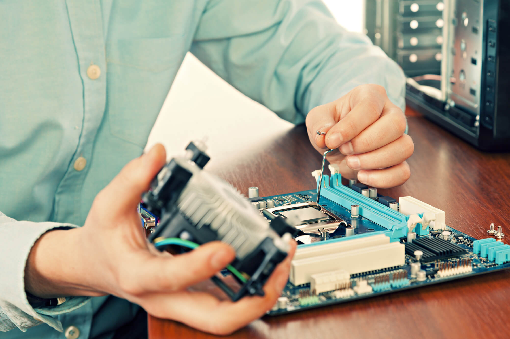
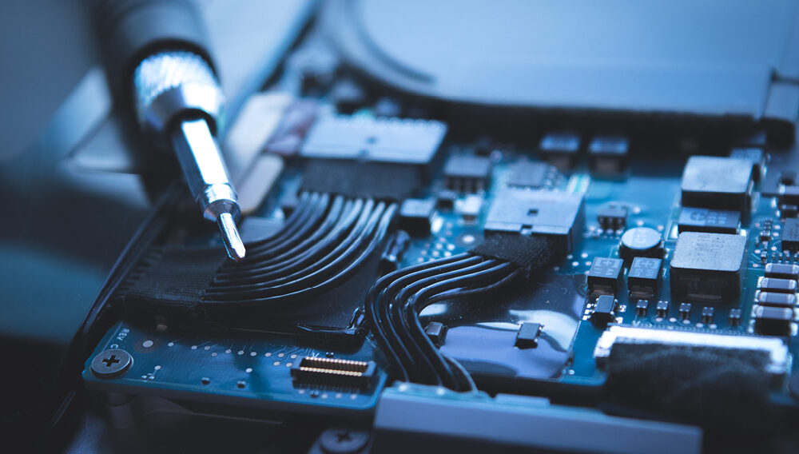
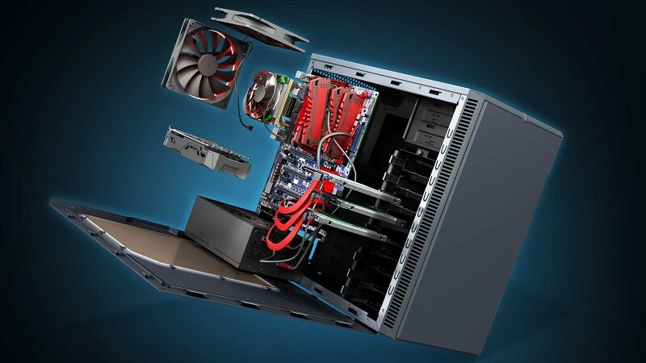

Os componentes do computador muitas vezes precisam de cuidado para serem limpos, consertados, manuseados e utilizados, o cuidado com os componentes e tratamento da máquina pode prolongar a vida útil e garantir um bom funcionamento do Hardware e Software, esses cuidados são:
A limpeza é um grande ponto para melhorar o funcionamento e prolongar a vida útil das máquinas, ela precisa ser feita da forma correta e por pessoas que sabem o que estão fazendo para não danificar os componentes, evitar lugares sujos ou com grande movimento que pode acarretar um maior acúmulo de sujeira. O prazo de limpeza pode variar dependendo do ambiente, máquina e uso, mas a limpeza de 6 em 6 meses é um bom prazo para ser seguido.
Isso é algo que pode inutilizar completamente o os componentes e pôr fim a vida da máquina, evitar lugares úmidos ou com muita proximidade a fontes de água, manusear garrafas e outros recipientes contendo líquidos com cuidado enquanto estiver perto da máquina.
Pode dar “descanso” aos componentes, reinicia e desligar o computador da forma correta também prolonga a vida útil da máquina. Para desligar da forma correta, clique no botão do Windows no teclado ou na barra de tarefas, na janela aberta clique no símbolo de Power e ira a aparecer as opções de Desligar ou Reiniciar.
Pode prevenir danos em caso de uma queda repentina ou um curto-circuito, os Blackout mantem o computador ligado por tempo suficiente para o usuário deligar a máquina da forma correta explicada acima. Compre sempre os Blackouts “puros” onde sua única função é manter a corrente estável.
Fazer backup e limpeza de dados regularmente para garantir a segurança dos seus dados e evitar acúmulos de dados desnecessários que pesarão na memória e afetaram o funcionamento do software, prejudicando o desempenho da máquina.
A refrigeração pode ser difícil dependendo do ambiente, mas locais ventilados e respeitar a temperatura do computador pode evitar problemas e danos sérios aos componentes podendo dar perda total ao computador. Ambientes ventilados e coolers eficientes podem garantir segurança na temperatura do computador.
